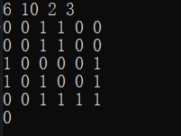
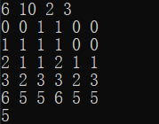

由波动数列对高级语言取模的思考
波动数列
题目描述
观察这个数列：
$$1,3,0,2, - 1,1, - 2$$这个数列中后一项总是比前一项增加2或者减少3。
栋栋对这种数列很好奇，他想知道长度为n或为s而且后一项总是比前一项增加a或者减少b的整数数列可能有多少种呢？
输入描述
输入的第一行包含四个整数n,s,a,b,含义如前面所述，其中：
$$1 \le n \le 1000, - {10^{^9}} \le s \le {10^9},1 \le a,b \le {10^6}$$输出描述
输出一行，包含一个整数，表示满足条件的方案数。由于这个数很大，请输出方案数除以 $ {10^8}{\rm{ + }}7 $ 的余数。
解题过程
第一层（10分）
思路
考虑极限情况：
$$\eqalign{ & {\rm{x,x}} + a,x + 2a,x + 3a,...x + (n - 1)a = nx + {{n(n - 1)} \over 2}a = s \cr & x,x - b,x - 2b,x - 3b,...x - (n - 1)b = nx - {{n(n - 1)} \over 2}b = s \cr} $$一式中x为最小值，二式中x为最大值，由此得到x的范围，进而可以枚举每一个x进行DFS
代码
1 |
|
第二层（20分）
思路
对枚举数量进行缩减，将a,b一同看为p,原式合并为：
$${\rm{x,x}} + p,x + 2p,x + 3p,...x + (n - 1)p = nx + {{n(n - 1)} \over 2}p = s$$所以a,b共有${{n(n - 1)} \over 2}$个，选定x,在DFS前枚举a的个数,如果所有a都不能满足$nx + {t_a}a - ({{n(n - 1)} \over 2} - {t_a})b = s$，则不进行对此x的DFS。
代码
1 |
|
第三层（100分）
思路
令：
$${{n(n - 1)} \over 2}p = z$$原式解出x:
$$x = {{s - z} \over n}$$由于x作为首项，必为整数，所以得到：
$$s = z(\bmod n)$$即s与z同余。
现在我们将p再次转化为f[i]={a,b},原式可写为：
$$x,x + f[1],x + f[1] + f[2],x + f[1] + f[2] + f[3],...,x + f[1] + ... + f[n - 1]$$
合并后为：
$$nx + (n - 1)f[1] + (n - 2)f[2] + ... + f[n - 1] = s$$由前面同余的关系，两边取模：
$$( - f[1] - 2f[2]... - f[n - 1])\% n = s\% n$$取反：
$$( f[1] + 2f[2]... + f[n - 1])\% n = (-s)\% n$$因此我们可以对f[1]-f[n-1]进行动态规划：
$$dp[i][j] = dp[i][j - i \times a] + dp[i][j + i \times b]$$dp[i][j]表示前i项余数为j的组合数。
最后我们取dp[n-1][(-s)%n]即可得解。
问题产生
取模异常
笔者在查阅题解时发现题解中对于取模并不是直接取模，而是进行了这样的操作：
1 | int Mod(int x) |
而使用Python3的选手则是像思路那样直接取模。
笔者对此十分的不理解，起初认为是忽略了题目的条件，经过几个小时的查阅笔者找到了这样做的理由：与数学取模保持一致/维护数组下标大于0。
数学取模
定义：如果a和d是两个自然数，d非零，可以证明存在两个唯一的整数q和r，满足a = qd+r 且（0 <= r < d>。其中，q被称为商,r被称为余数。
所以对于（-7）%3,答案应该是2。
但高级语言并不一定为2
C++：cout<<(-7)%3;//输出为-1
Java:System.out.println((-7)%3);//输出为-1
Python:print((-7)%3)//输出为2
结果让我大跌眼镜，查阅资料得知，C++和Java通常会让商大一点，Python通常会让商小一点。所以C++和Java商为-2.Python为-3，进而导致了结果的不同。
所以，为了和我们的认知——数学取模保持一致，我们利用Mod(int x)这个函数让C++的取模和Python和数学取模保持了一致。这也就回答了为什么C++有一种多此一举的感觉。
但是其实，从另一个角度想，就算C++不这样取模，难道答案就会错吗？有没有可能这样做只是为了维护下标大于0？
确实会错
这是在C++下直接取模（下标同+1000）：

这是在C++下函数取模：

所以，做题还是严格按照数学取模来叭
代码
1 |
|